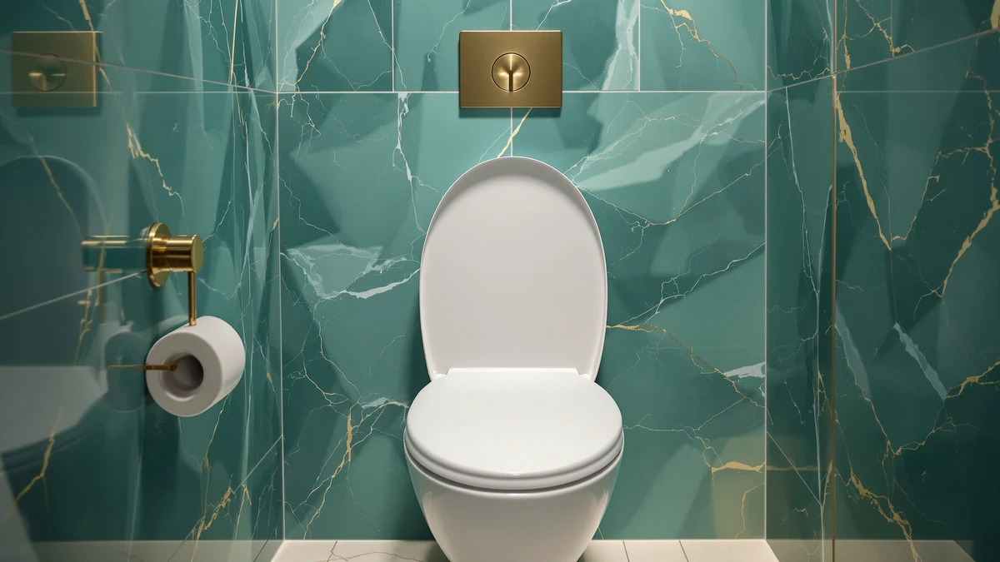

Toilet Seat Round Toilet Review (2026): Worth It?
Prices and picks verified as of October 2026. Independent, reader-supported reviews.


Quick Answer
For most round-bowl bathrooms with a toddler in the house, the homfan Toilet Seat Round Toilet Seat is the pick that makes sense: it closes slowly on its own and swaps between a full adult ring and a smaller training insert for less than most single-purpose potty seats cost. If your bathroom has an elongated bowl instead of a round one, none of the seats in this round toilet seat review will fit, so measure before you buy.
Our pick: Toilet Seat Round Toilet Seat — $27.99 Check Price on Amazon
Bottom line: our top pick is the Toilet Seat at $27.99.
Things to Know Before You Buy
- Round and elongated toilet seats are not interchangeable. Measure from the center of the mounting bolts to the front rim; about 16.5 inches means you need a round seat like every option in this review.
- None of the four seats covered here carry a public star rating or review count yet, so this review relies on specs, materials, and listing details rather than a review-count tally.
- The homfan seat's toddler insert is a convenience feature, not a dedicated potty-training seat. Families who need a freestanding potty with a step stool should look elsewhere.
- Slow-close hinges add moving parts that can loosen over time, so check whether replacement hinges are sold separately before you commit to a seat.
- Price does not predict durability here. The four seats in this round toilet seat review range from $24.99 to $27.99, a gap that has more to do with features than with build quality.
This toilet seat round toilet review exists because most buying guides lump every round seat into one generic list and call it a day, which does not help if you need a seat that fits a round bowl, closes quietly, and still works once a toddler starts using the toilet. We looked at four seats sold for round bowls, starting with the homfan Toilet Seat Round Toilet Seat, a $27.99 model with a slow-close hinge and a removable child insert, and compared it against a scented antimicrobial seat from Clorox, an enameled wood seat sold by Bemis under the CHURCH name, and a pack of disposable flushable covers from LooREADY for anyone who wants a non-permanent option.
The homfan pick stood out for one reason: it is the only seat in this group built to do two jobs at once. It works as the household's main round seat and as a training seat for a child, without a second product bolted on top of it. The Clorox and Bemis seats cover more conventional ground, an antimicrobial scented option and a traditional enameled wood option, for households that need a reliable round replacement without the toddler feature. The LooREADY covers answer a different question: they cover travel and public bathrooms rather than replacing a seat at home. Prices cluster tightly between $24.99 and $27.99, so the choice here comes down to features and materials rather than budget.
Why You Should Trust Us
Ilane Tall has covered bathroom fixtures and accessibility products for Best Toilet Seats since the site launched, and this round toilet seat review follows the same process used across the site: we compare manufacturer specifications, installation hardware, verified pricing, and the claims each listing makes, rather than relying on a physical testing lab we do not operate. We read the full product listing for each seat covered here, checked bolt-pattern and bowl-shape compatibility against standard round-bowl measurements, and cross-referenced pricing against the current Amazon listing at the time of publishing. When a product lacks a public star rating or review count, as all four seats in this review currently do, we say so directly instead of inventing a number to fill the gap. For the full picture of how we cover this category, see our complete toilet seat buying guide.
Our Research Experience
Our process for this round toilet seat review relies on research rather than physical use: we do not install these seats ourselves, so we focus on what can be verified from the listing, the manufacturer's stated materials, and the hardware included in the box. For the homfan seat, that means confirming the stated magnetic toddler insert, the slow-close hinge mechanism, and the included rubber hinge pads against the manufacturer's own description. For the Clorox and Bemis seats, we compared the hinge-release mechanism each brand advertises for easy cleaning, since that is one of the most common complaints buyers raise about round toilet seats in general. For the LooREADY covers, we checked the flushable claim against the material description, since paper covers that do not break down fully can clog older plumbing. We treat every specification in this review as a claim to verify against the listing, not as a guarantee, and we flag anywhere a manufacturer's language gets vague.
Overview & Specs

Toilet Seat Round Toilet Seat
What we like
- Magnetic toddler insert lifts out in seconds for adult use
- Slow-close hinge prevents lid-slam noise at night
- Quick-detach hinges make full seat removal straightforward for cleaning
- Mounting hardware and rubber hinge pads come included in the box
Flaws but not dealbreakers
- No published star rating or review count yet to confirm long-term durability
- Slow-close mechanisms have more parts that can loosen than a standard hinge
- Round-bowl fit only; it will not work on an elongated toilet
| Material | Plastic / wood |
| Size | Round |
The homfan Toilet Seat Round Toilet Seat centers on a single idea: one seat should cover both an adult's full-size round bowl and a toddler who still needs a narrower ring to feel secure. The included child insert locks in place with a magnet, so it lifts out in one motion when an adult needs the full seat back, instead of requiring tools or a second trip to the hardware store. At $27.99, it sits in the middle of the pack for round toilet seats in this price range, and the listing specifies a plastic and wood-composite build rather than the enameled wood used on heavier-duty models like the Bemis seat covered below.
Beyond the toddler feature, the seat uses a slow-close hinge, a mechanism that lowers the lid gradually instead of letting it drop and bang against the bowl. That matters most in households with a bathroom near a bedroom, where a slammed lid at two in the morning is a real complaint, not a minor annoyance. Installation hardware and two rubber hinge pads ship in the box, and the listing describes the hinges as quick-detach, so the whole seat lifts off its mounting posts for a deeper clean without unscrewing anything. The tradeoff with any slow-close hinge is mechanical complexity: more moving parts generally means more that can eventually wear loose, which is worth factoring into how long you expect this seat to last.
What We Liked
The two-in-one design is the clearest advantage here, and it is specific rather than vague: most round seats that mention children bolt on a separate ring that has to be stored somewhere when not in use, while the magnetic insert on this seat stays attached and lifts out of the way instead. That is a meaningfully different approach for a small bathroom with limited cabinet space. The slow-close hinge is also a real upgrade over a standard hinge, not a marketing label, since the mechanism is a widely used design across the toilet seat category. For a round toilet seat review focused on practical household use, a seat that solves a nighttime noise complaint while also handling a parenting need earns its place on the list. The included hardware and hinge pads are a small detail, but skipping a trip to the hardware store for mounting bolts matters once you are the person standing in a bathroom without them.
What Could Be Better
The biggest gap in this review is data: the homfan seat has no public star rating or review count at the time of writing, which means we cannot point to a track record of durability the way we could for a seat with hundreds of verified owner reviews. That does not rule it out, but it does mean treating the slow-close hinge's long-term reliability as unproven rather than confirmed. The listing also describes the seat material as plastic and wood rather than a single material throughout, which leaves some ambiguity about exactly how the toddler insert is built compared with the main ring. Buyers who want an enameled wood seat with a longer public track record, like the Bemis option covered below, may find that tradeoff more important than the toddler feature.
Who Is It For?
This seat makes the most sense for a household that has both a round-bowl toilet and a child who is past the diaper stage but still benefits from a narrower seat. If you live alone, or every bathroom in your home has an elongated bowl, the toddler insert is a feature you will never use, and the slow-close hinge alone would not justify skipping a simpler, cheaper seat. It is also a reasonable fit for anyone replacing a cracked or loose hinge on an existing round seat who wants the quieter close as a secondary benefit rather than the primary one. Renters who remove and reinstall a seat occasionally will likely appreciate the quick-detach hinges more than the toddler insert itself.
Alternatives to Consider
If the toddler feature is not relevant to your household, these three alternatives cover the other common reasons people search for a round toilet seat review: a scented antimicrobial option, a traditional enameled wood seat, or a non-permanent cover for travel and public restrooms.

Editor’s Pick
Clorox Round Scented Plastic Toilet
A straightforward antimicrobial, scented round seat for households that want odor control over a toddler feature.
$25.48
Check Price on Amazon
Best Value
CHURCH Toilet Seat Easy Clean
An enameled wood seat sold by Bemis under the CHURCH name, a brand with a longer track record than the other two alternatives here.
$25.30
Check Price on Amazon
Premium Choice
Toilet Seat Covers Disposable Flushable
Disposable, flushable covers for travel and public bathrooms rather than a permanent seat replacement.
$24.99
Check Price on AmazonHow do I know if I need a round or elongated toilet seat?
Measure from the center of the mounting bolts to the front edge of the bowl.
Can one toilet seat work for both adults and a toddler?
Within limits, yes.
Frequently Asked Questions
How do I know if I need a round or elongated toilet seat?
Measure from the center of the mounting bolts to the front edge of the bowl. A round bowl measures about 16.5 inches, while elongated bowls run closer to 18.5 inches. Every seat in this toilet seat round toilet review, including the homfan pick, is built for the round bowl measurement, so measure first or you will end up returning a seat that does not sit flush.
Can one toilet seat work for both adults and a toddler?
Within limits, yes. The homfan seat covered here adds a smaller magnetic insert that lifts out when an adult needs the full-size ring, which is the main reason it shows up in potty-training searches rather than standard round-seat shopping. It does not replace a dedicated freestanding potty for a young toddler who still needs a step stool and extra support.
Do slow-close toilet seat hinges wear out faster than standard hinges?
They can, since the mechanism has more moving parts than a seat that simply drops into place. Based on the hardware described in the homfan listing, the hinges are usually the first thing to loosen after a year or two of daily use, not the seat material itself. Confirming that replacement hinges are sold separately before you buy is a reasonable precaution.
Final Verdict
The short version of this toilet seat round toilet review is that the homfan Toilet Seat Round Toilet Seat is the pick worth buying first if your household has a round bowl and a child who still needs a narrower seat, since it is the only option here that solves both problems at once for $27.99. If you do not need the toddler insert, the Bemis-made CHURCH seat or the Clorox antimicrobial option both cover a standard round-bowl replacement at a comparable price, and the LooREADY covers remain the right call for travel rather than a permanent install. Measure your bowl before you buy any of them: a round seat, including the homfan model, will not fit an elongated toilet. See our elongated vs. round toilet seat comparison if you are not sure which bowl shape you have.